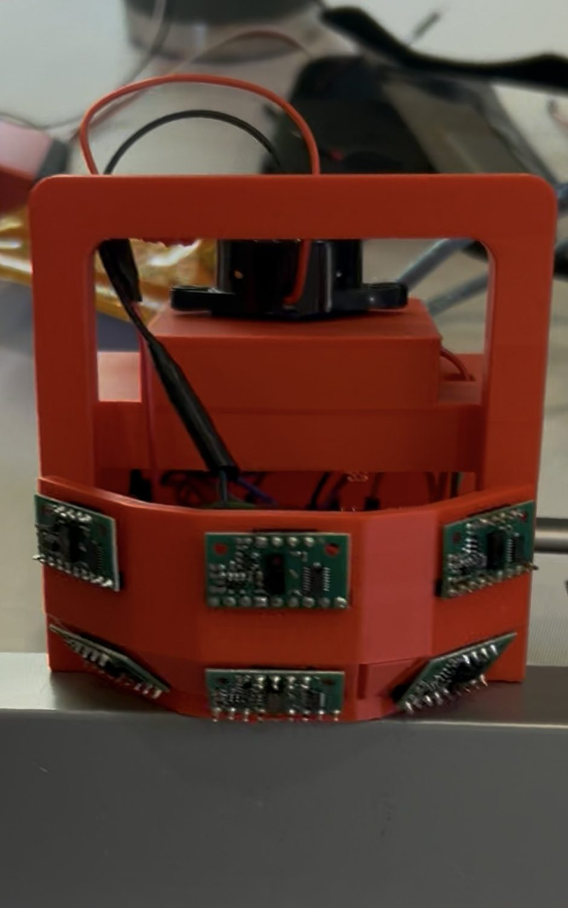
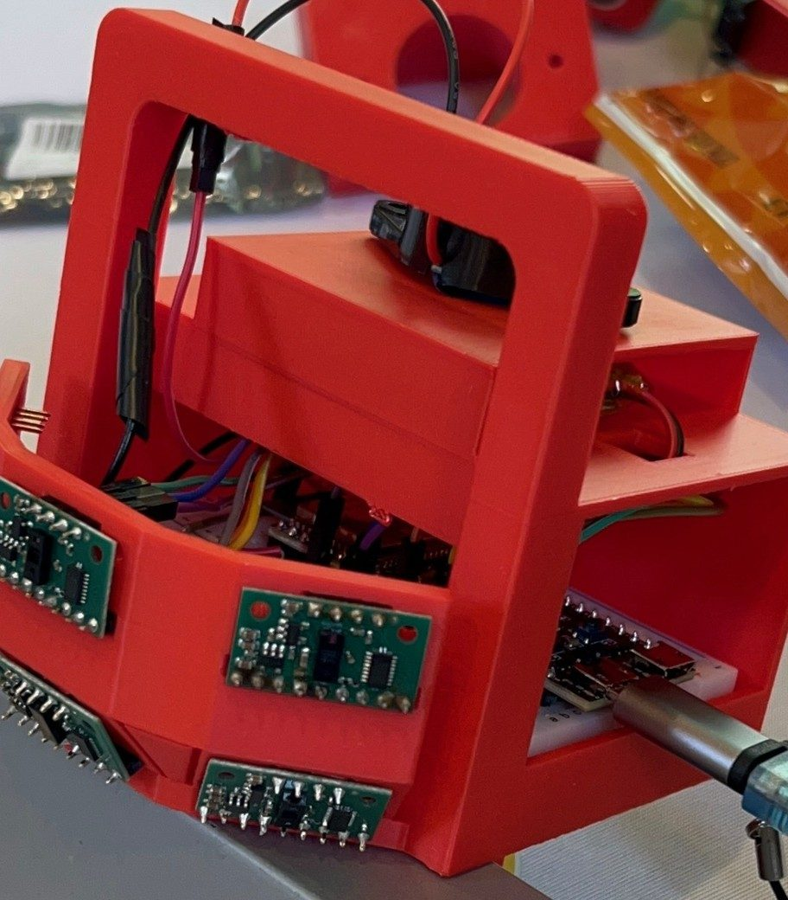
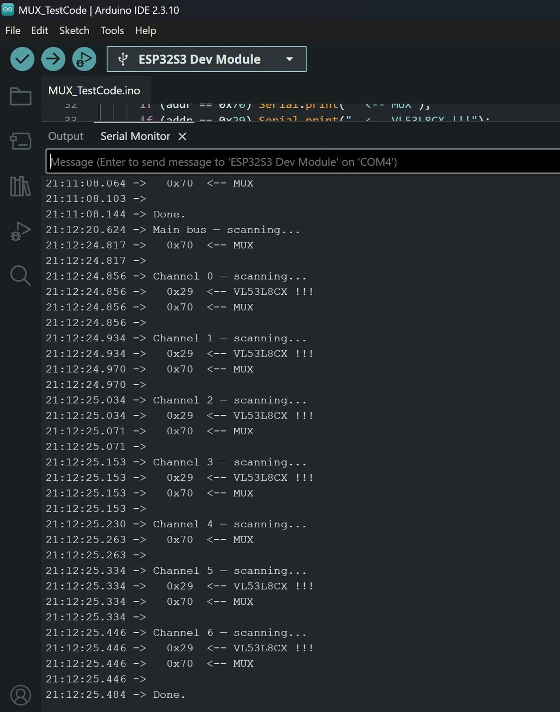
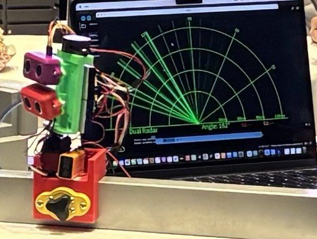
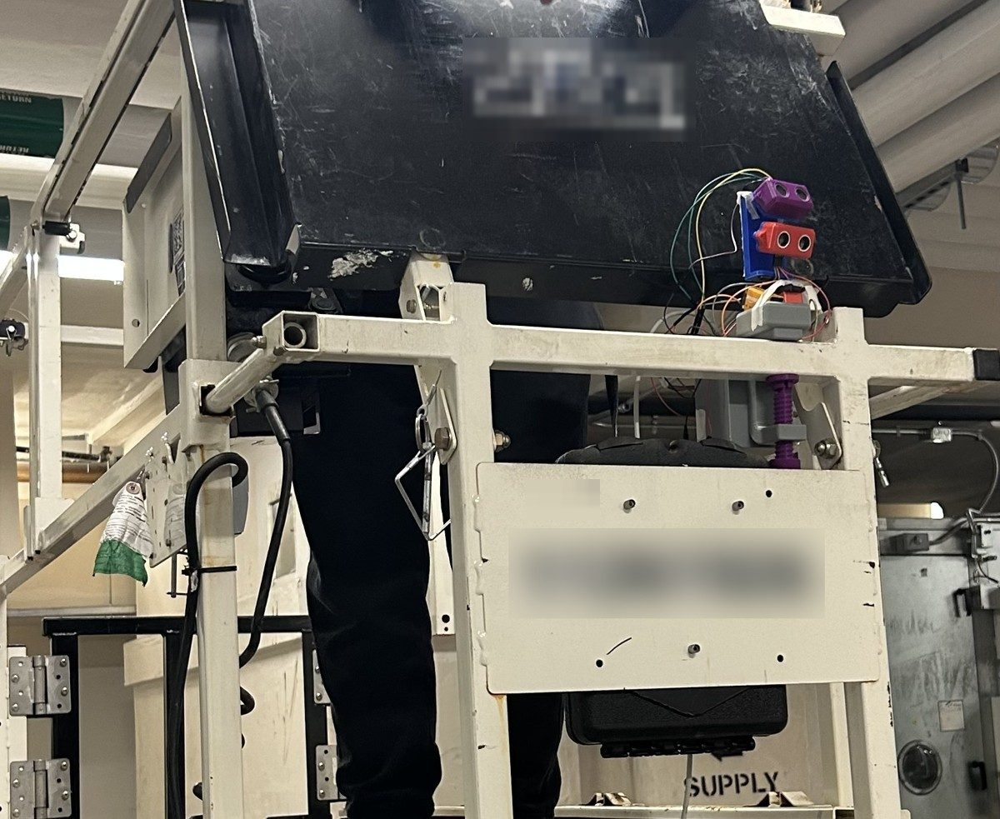
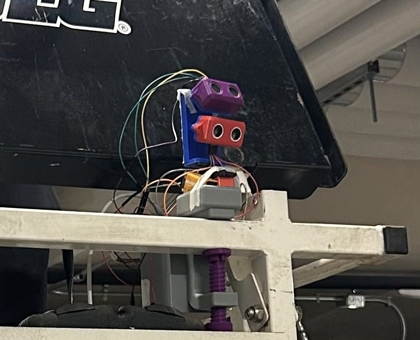

Scissor Lift Collision Detection System
Project Lead / Industry Partner: Skanska






Leading a team of 4 on a microcontroller-based object detection system that reduces scissor lift collisions. The current generation uses six time-of-flight sensors, and power optimization cut its energy use by 83% over a 10-hour run.
Full breakdown
Context
I currently lead a team of 4 designing a microcontroller-based object detection system to reduce scissor lift collisions. The project is developed with support from Duke's EGR 101/102 engineering design sequence, with Skanska as the industry partner and a power consultant advising on energy use.
Approach
- Generation 1 was an ultrasonic prototype: two sensors on a sweeping servo, with trigonometry on the servo angle to place objects relative to the lift and a radar visualization on a laptop. The sweep limited speed and coverage and drew heavy current, which cut battery life.
- Generation 2 replaced it with six VL53L8CX time-of-flight sensors sharing one I2C bus through a TCA9548 multiplexer. The firmware is a non-blocking C++ state machine that switches ranging between 1 Hz when nothing is near and 6 Hz when something is, with hysteresis and a 4-second hold before stepping back down. The buzzer steps one level at a time so alerts ramp smoothly.
- An 11-part test suite characterized the sensor's power draw: ranging frequency, 4x4 versus 8x8 resolution, integration time, ranging mode, ESP32 light sleep with interrupt wake, duty cycling and calibration tuning. I used ST's VL53L8CX API to alter these parameters, tuning each one to the power and performance needs of our system.
Result
Energy use dropped from 627 mAh to 109.2 mAh over a 10-hour run, an 83% reduction, by interfacing directly with the sensor's APIs. Next up is a KiCad PCB design to shrink the product's footprint.